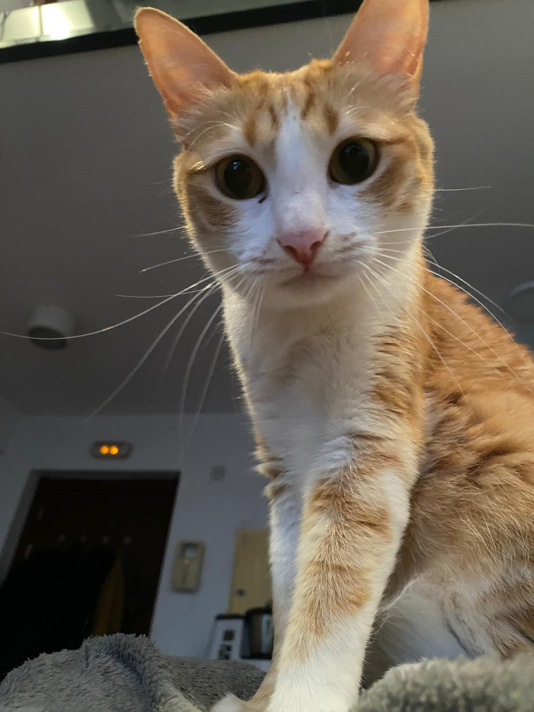

¿Cómo es Orejita?
- Edad: Tiene 4 años.
- Origen: Nos la trajo unos vecinos de una protectora de Badajoz.
- Anécdota de llegada: Llegó la primera a la casa, tardó días en salir del tendedero en el que se sentía segura.
- Personalidad: Es muy cariñosa y ronronea cuando la acaricias.
- Su lado malo: También tiene muy mal humor y suele bufar bastante cuando se enfada.
